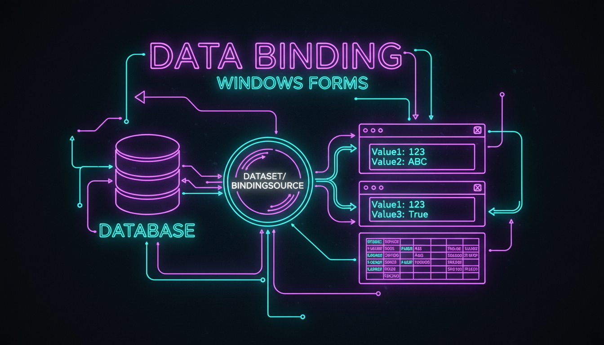

BindingSource, прив'язка контролів, навігація

// BindingSource
BindingSource^ bs = gcnew BindingSource();
bs->DataSource = ds->Tables["Students"];
// Прив'язка до TextBox (одиночна)
txtName->DataBindings->Add("Text", bs, "Name");
txtAge->DataBindings->Add("Text", bs, "Age");
// Прив'язка DataGridView
dgv->DataSource = bs;
// Навігація
btnFirst->Click += gcnew EventHandler(
[bs](Object^ s, EventArgs^ e) { bs->MoveFirst(); });
btnPrev->Click += gcnew EventHandler(
[bs](Object^ s, EventArgs^ e) { bs->MovePrevious(); });
btnNext->Click += gcnew EventHandler(
[bs](Object^ s, EventArgs^ e) { bs->MoveNext(); });
btnLast->Click += gcnew EventHandler(
[bs](Object^ s, EventArgs^ e) { bs->MoveLast(); });
// Поточна позиція
bs->PositionChanged += gcnew EventHandler(
[bs, lbl](Object^ s, EventArgs^ e) {
lbl->Text = String::Format("Запис {0} з {1}",
bs->Position + 1, bs->Count);
});